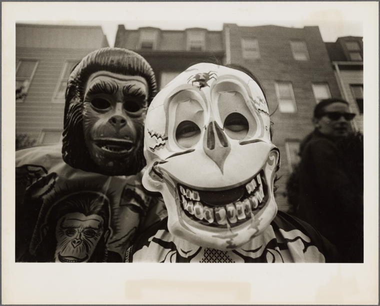
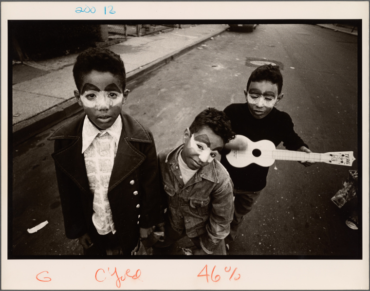
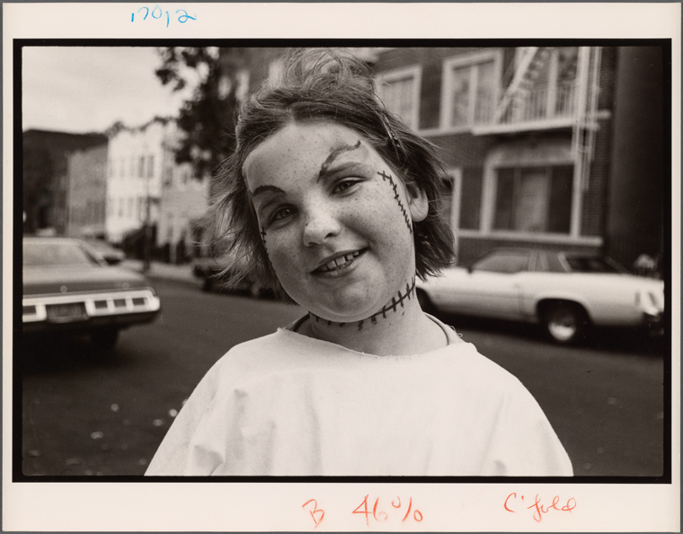
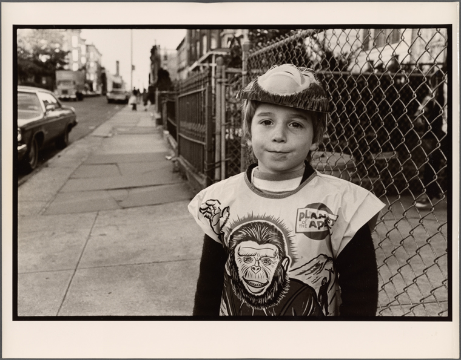
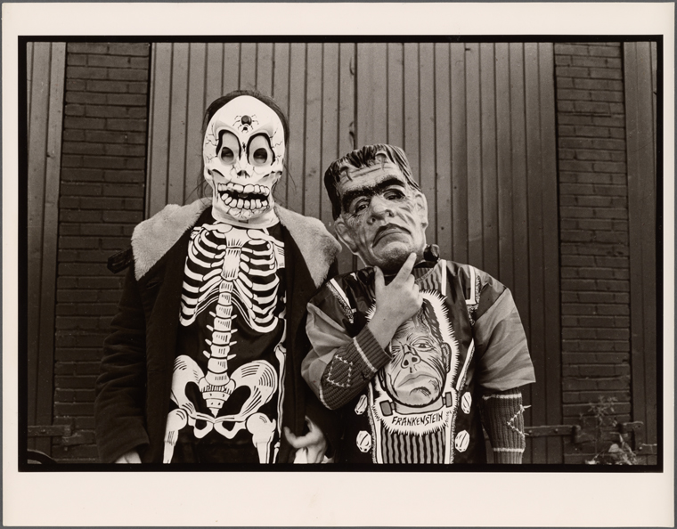
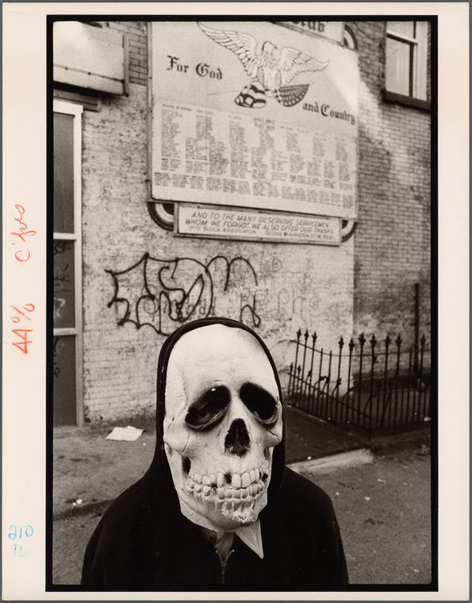
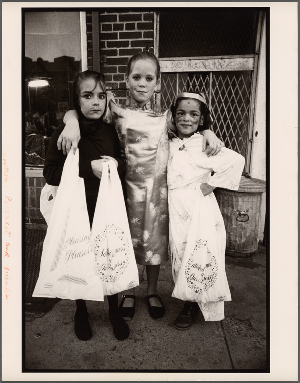

Halloween has originated from the old Celtic festival and even before that. In those times, a man painted a mask on their face with blackened ashes from the sacred bonfire and dressed up as fearsome beings. It was believed that this is the last night for the dead to have their vengeance before moving on so people wore masks and costumes not to be recognized, to scare away evil spirits and to prevent them from entering homes. They believed it was important to honor dead, so Halloween developed from Pagan ritual to Masquerade party night. It is believed that in this celebration days the souls of the dead roam the earth. So the most common costume is the white ghost sheet, and the common mask is the ghost or spirit mask. People believed that wearing masks and costumes protected them from ghosts. This night represents the border between the living and the death. The souls of the dead were meant to revisit their homes.